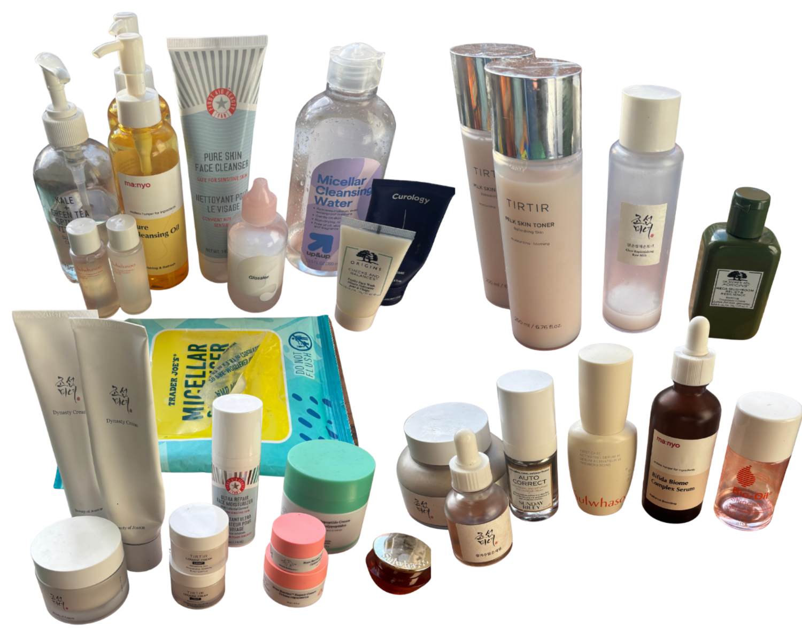
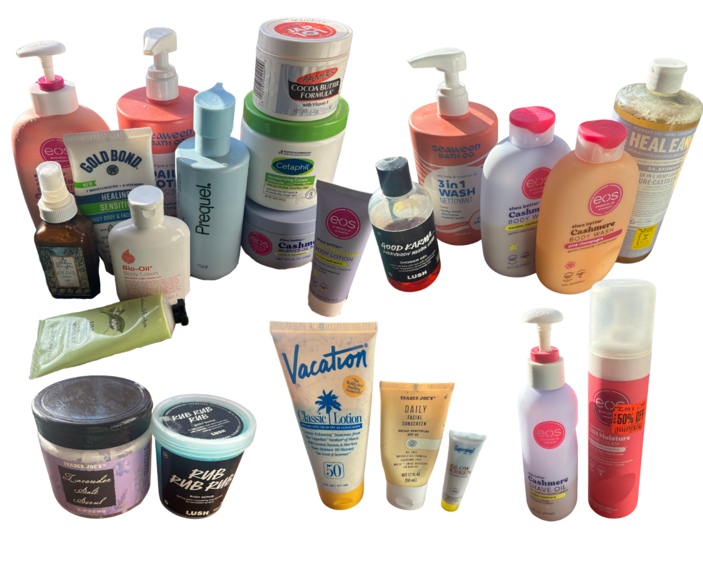
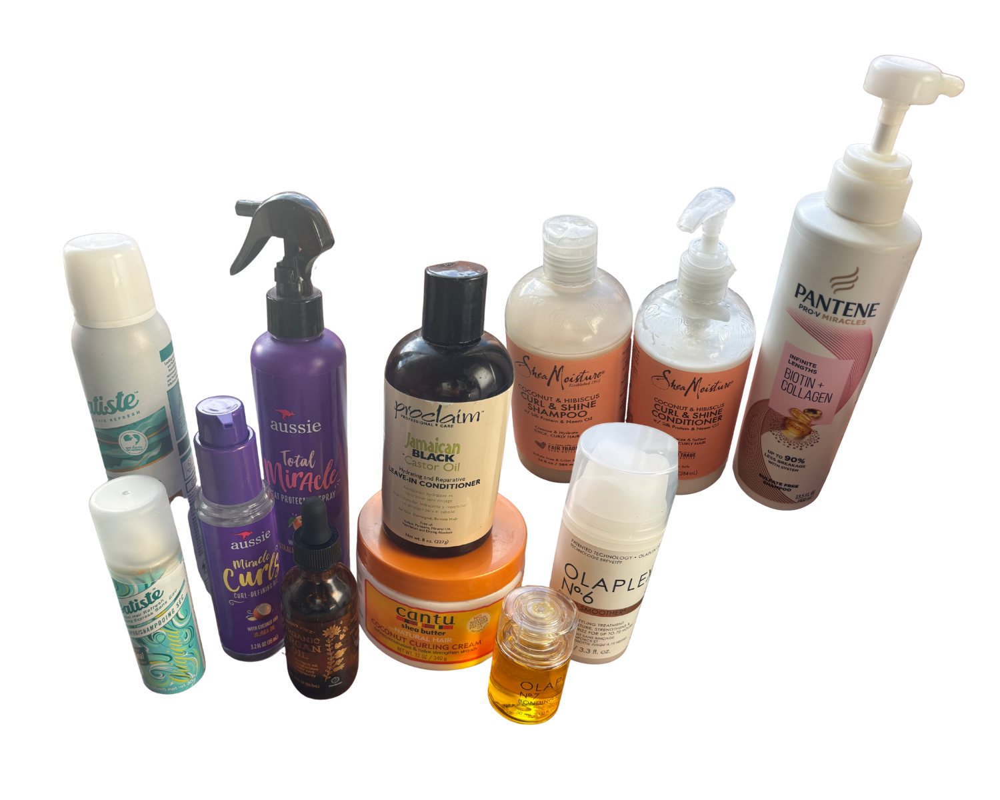

project pan
for anyone unfamiliar, project pan is a personal challenge where you finish skincare and body care
products before buying more. for some people, this is just how they live. i am not one of those people.
this is mostly an exercise in self-control, clearing out clutter, and finally using things that have
been open for… a while.
once everything is gone, i want to be more intentional about what i bring back in—fewer products,
better choices, and ingredients i don’t have to be nervous will give me cancer. progress is tracked in empty
bottles, so i’ll be checking in and updating this monthly.
start of 2025 inventory
face

body

hair

products i have finished
january
- tj's micellar wipes
- curology face wash (mini)
- beauty of joseon rice milk toner
- beauty of joseon dynasty cream
- drunk elephant repair cream (mini)
- tirtir ceramic cream (mini)
- tj's lavender body scrub
- palmers cocoa butter
no hair products finished this month :/
february
- up&up micellar water
- drunk elephant repair cream (mini)
- tirtir ceramic cream (mini)
- sulwhasoo ginseng face cream (mini)
- bio-oil
- eos vanilla cashmere body butter
- eos vanilla cashmere shave oil
- aussie curl oil